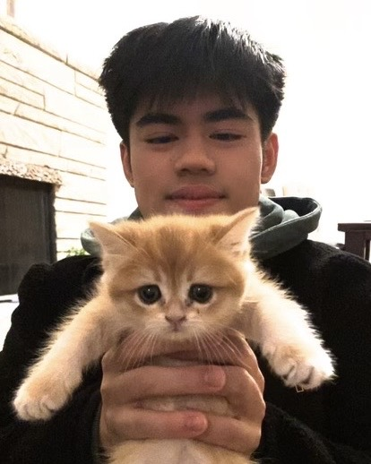

Javier Woo

Objective Statement
A motivated Kinesiology graduate from the University of Toronto seeking to leverage analytical skills, scientific mindset, and passion for learning in transitioning into the field of computer science, with a focus on contributing to innovative solutions and advancements in technology.
Education
Bachelor of Kinesiology with High Honours, University of Toronto
Toronto, ON Completed: May 2022
- Cumulative GPA: 3.63/4.00 (R. Tait McKenzie Society Award)
- Key Courses (Grade, Avg.): Introduction to Computer Programming (A-, B-), Sport Analytics Game Theory and
Tactics (A, A-), Sport Management (A, B+), Ergonomics (A, B+), Ethics & Power in Kinesiology Physical
Education and Health Fields (A-, B+), Musculoskeletal Biomechanics (A+, A-)
Work Experience
Project Manager
Echo Club
October 2023 - Present
- Led the development and implementation of a comprehensive poker operation software aimed at optimizing data management, financial tracking, and post-game settlements.
- Spearheaded the conceptualization, planning, and execution phases of the poker operation software project.
- Collaborated with stakeholders to identify requirements and objectives, ensuring alignment with organizational goals.
- Implemented robust database architecture to securely store and manage player information, game data, transactions, revenue, and expenses.
- Provided comprehensive training and support to staff members for seamless adoption and utilization of the software platform.
- Continuously evaluated system performance and gathered user feedback for ongoing refinement and optimization.
Data Analyst Intern
Dion Technologies
September 2023 - May 2023
- Organized and analyzed data sets of 1000+ data points to gain knowledge of the stock and crypto markets
- Created reports and conducted meetings to communicate data findings to shareholders
- Developed new trading strategies to increase profits by 40% and manage risk level
Leadership
Team Captain
Kinesiology Games
September 2019 - April 2022
- Recruited and managed a 16-student team to compete in the largest student-led conference in Canada
- Organized team schedules, finances and fundraising events, and handled team conflicts to ensure a welcoming and
equitable team environment that led to a 3rd place finish in the dance component of the 2022 conference
Camp Counsellor
University of Toronto Kinesiology Camp
September May 2022 - September 2022
- Designed and led the adapted games station at the camp to educate Kinesiology students on how to promote
equity, diversity, and inclusion
- Designed and led other outdoor activities to instill the importance of outdoor education, comradery, and
communication
Awards and Certifications
The Complete SQL Bootcamp 2022: Go from Zero to Hero
Completed July 2022
The Complete Python Bootcamp 2023: Go from Zero to Hero
Completed February 2023
Personal
- Technical Skills: Data analysis and visualization (R, Excel), data manipulation (SQL, Python)
- Languages: Fluent in English, Cantonese, and currently studying Mandarin
- Sports Lover: Played hockey for 10+ years at AAA and Junior B levels (2018 BC Tier 1 Midget AAA Provincial
Champion). Played in the Hong Kong American Flag Football League for one year (Offensive Rookie of the Year
2023)
- Music: Studied piano for 10+ years reaching Grade 9. Played the trumpet in elementary and high school
ensembles. Record songs and mix as a DJ for enjoyment
- Dog Owner: Proud dad of a Bearded Collie named Beau
- Fantasy Football: Avid fantasy football player since 2016 (2016 & 2017 League Champion)